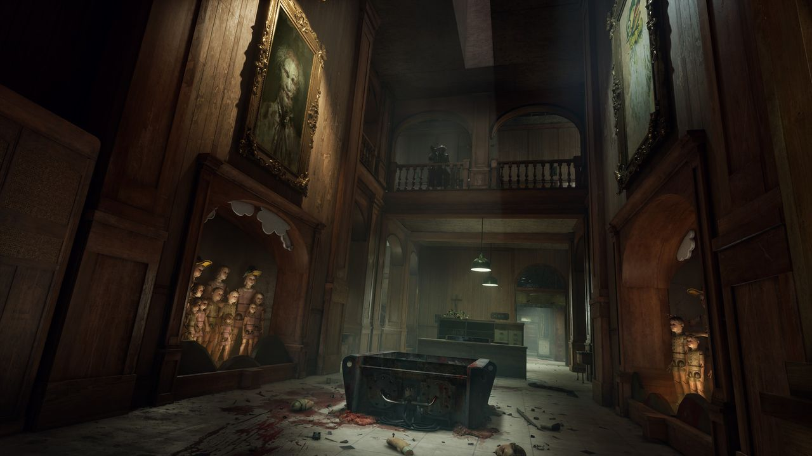
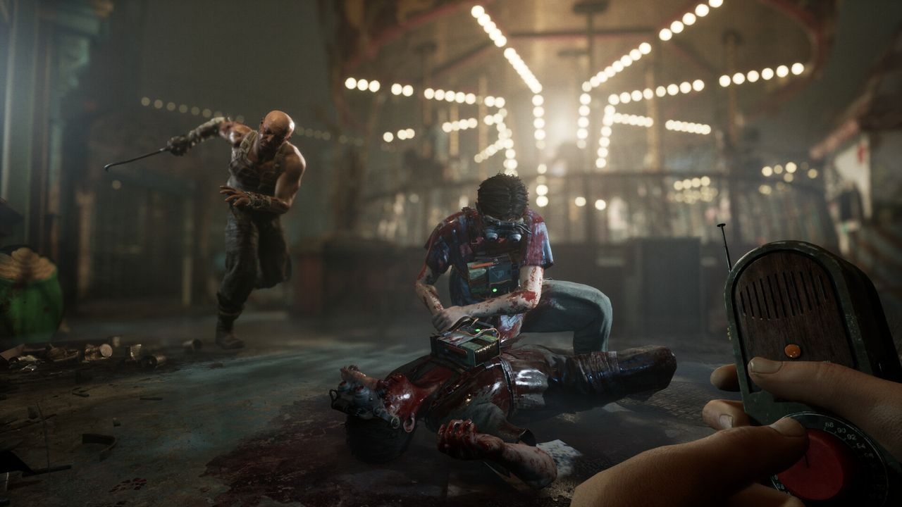
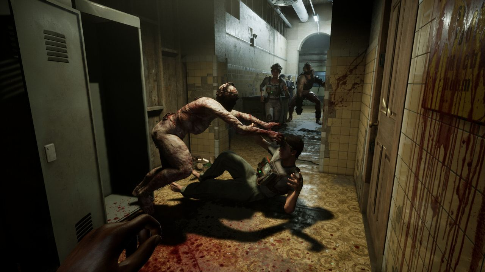
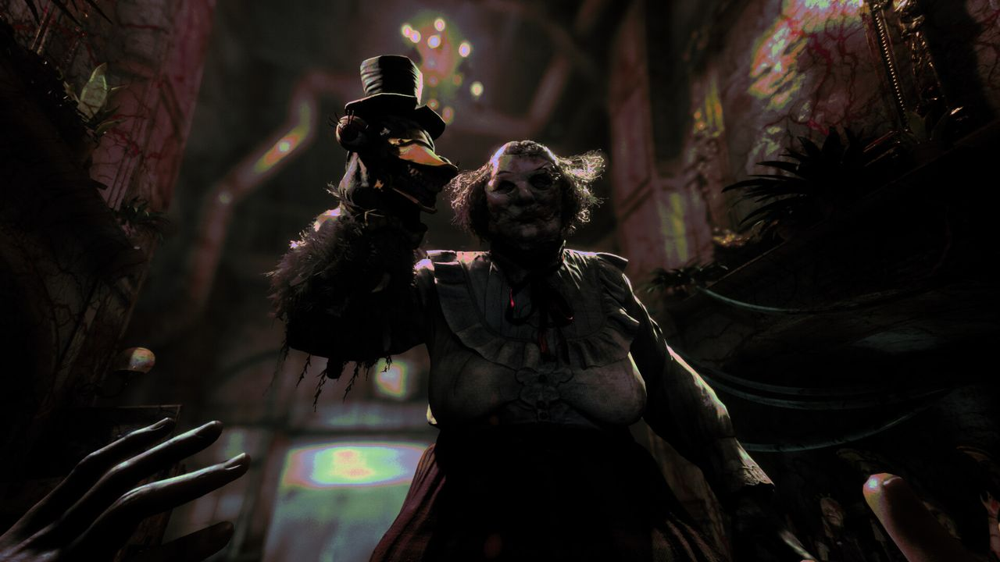

Общее впечатление

The Outlast Trials — кооперативный хоррор от Red Barrels, авторов серии Outlast. Действие разворачивается во времена холодной войны: корпорация Murkoff проводит эксперименты над людьми, а игроки в роли «реагентов» проходят испытание за испытанием. В отличие от первых частей серии, здесь можно играть вместе: команда собирается до четырёх человек, но пройти игру можно и в одиночку.
Это моя любимая кооперативная игра: оценка 10/10.
Как я пришла к игре
Меня долго уговаривали сыграть в The Outlast Trials, и я так же долго сопротивлялась, но в конце концов сдалась. Дело в том, что я терпеть не могла хорроры. Первую часть Outlast мне тоже пришлось проходить не по своей воле, и каким-то чудом я её осилила. Она даже мне понравилась, но я была твёрдо уверена, что больше к хоррорам не прикоснусь.
Я села играть, а рядом меня подбадривали и смеялись над тем, как сильно я пугаюсь. Я прошла вступительное испытание, закрыла игру и целый год в неё не заходила. Всё изменилось, когда мне стали попадаться видео, где люди играют вместе с друзьями: во мне что-то проснулось, я решилась зайти сама, и с тех пор играю очень часто.
Кооператив

Главное здесь — командная игра: один отвлекает, другой выполняет задачу, третий лечит. Когда рядом друзья, страшно по-другому: хоррор превращается в совместную историю, которую потом вспоминаешь вместе. Каждое испытание — отдельное небольшое приключение, и никогда не знаешь, чем оно закончится.
Атмосфера


Игра держит напряжение за счёт обстановки и звука: каждое помещение выглядит как декорация чужого кошмара. А поскольку рядом друзья, можно позволить себе смеяться даже в самые тревожные моменты.
Друзья и сообщество
Теперь я сама зову друзей присоединиться, и мы играем вместе. Многие, как и я, поначалу боятся, но потом привыкают: крики ужаса превращаются в смех над нелепыми ситуациями, в которые мы то и дело попадаем. Благодаря этой игре я подружилась со многими ребятами, и наша дружба остаётся крепкой до сих пор. Несмотря на устрашающий вид и жуткие сюжеты, у игры огромное сообщество, в котором много по-настоящему классных людей.
Крики ужаса превращаются в смех, когда рядом друзья.
Трейлер
Музыка
Где купить
- The Outlast TrialsОткрыть в Steam